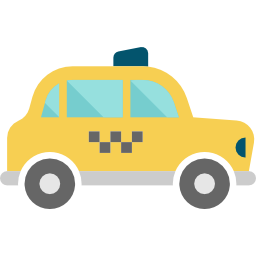

<ion-content [fullscreen]="true">
  <div id="container">
    <strong>Ingresa tu direccion actual</strong>

    <p>Start with Ionic <a target="_blank" rel="noopener noreferrer" href="https://ionicframework.com/docs/components">UI Components</a></p>
    <strong>Ingresa la direccion de tu destino</strong>
    <ion-item>
      <ion-input></ion-input>
    </ion-item>
    <div id="container-icon-taxi">
      
    </div>
  </div>
</ion-content>
